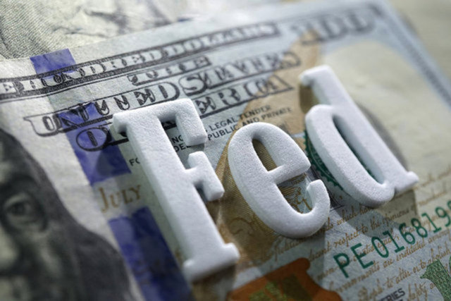

Piyasa takipçileri tarafından yakından gözlemlenen Fed kararlarının temmuz ayında ne olacağı merak konusu oldu. Bilindiği gibi haziran ayında Fed politika faizini beklentiler doğrultusunda değiştirmeyerek 16 yılın en yüksek seviyesi olan yüzde 5-5,25 aralığında sabit tutmuştu. İşte, "Fed faiz kararı ne zaman belli olacak?" sorusunun yanıtı ile güncel bilgiler...
Piyasaların gözü Jerome Powell'ın açıklamalarına çevrildi. Temmuz ayı Fed faiz kararı beklentileri, kararların açıklanacağı tarih ve konuyla ilgili detayları sizler için haberimizde derledik. İşte Fed faiz toplantısı ve kararları hakkında merak edilen soruların yanıtı...
ABD Merkez bankası (FED) faiz toplantısı tarihi belli oldu.
FED faiz kararı toplantısı 25 - 26 Temmuz tarihlerinde yapılacak ve 26 Temmuz akşamı saat 21.00'da faiz kararı açıklanacak.
Para piyasalarındaki fiyatlamalarda söz konusu veri öncesi, Fed'in bu ayki toplantıda yüzde 92 ihtimalle politika faizini 25 baz puan artıracağı tahmin edilirken, Banka'nın yıl sonuna kadar toplamda 50 baz puanlık faiz artırma potansiyeli de masada kalmaya devam ediyor. Analistler, ülkede haziran ayı enflasyonuna ilişkin piyasa beklentilerinin aylık bazda yüzde 0,3 ve yıllık bazda yüzde 3,1 olduğunu anımsattı.
25 - 26 Temmuz
19 - 20 Eylül
31 Ekim - 1 Kasım
12 - 13 Aralık